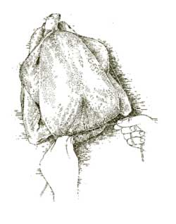
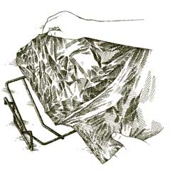

1. Using the center of a 5 foot length of heavy kitchen twine, tie the legs together at the ankles.

2. Run the twine around the thighs and under the wings on both sides of the bird, pulling tightly.

3. Keeping the twine pulled snug, tie a firm knot around the excess flesh at the neck of the bird. Snip off excess twine.

4. Set V-rack in pan and line with heavy-duty aluminum foil. Spray the foil with vegetable cooking spray, then pierce 20 to 30 small holes in the foil with a paring knife.
|
|
|